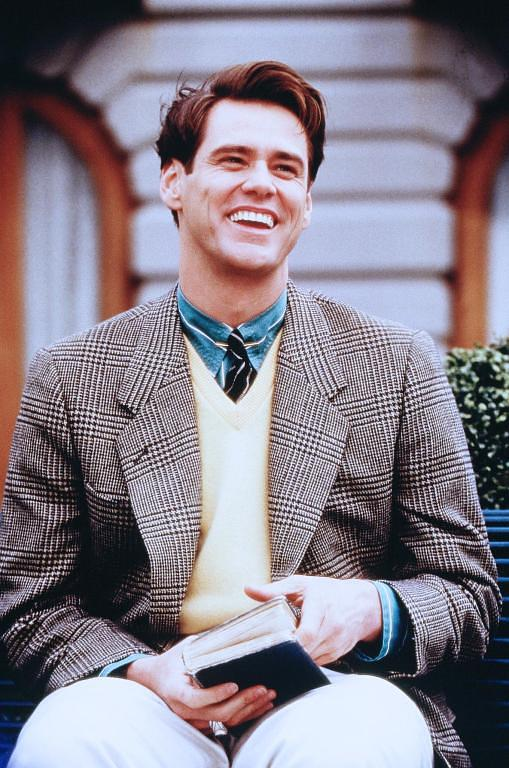
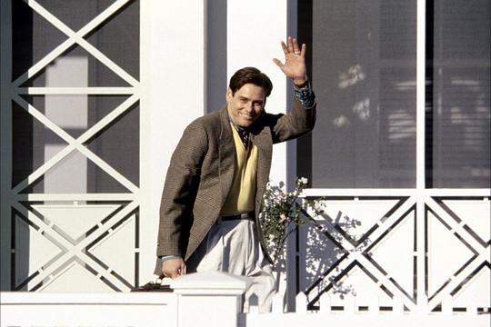
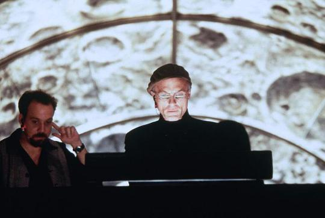
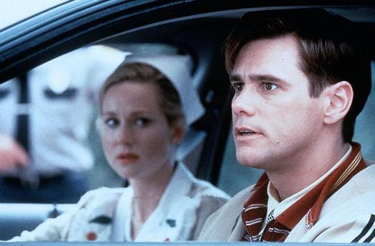
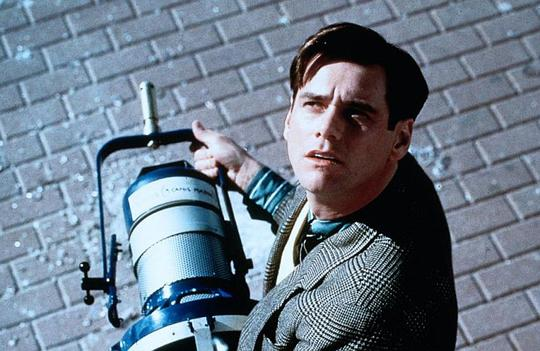
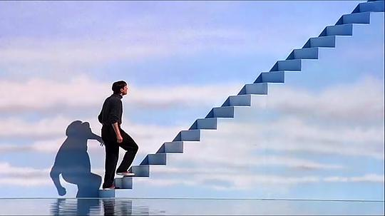

Stomper
weekly poster
login
movies
masters
Stanley Kubrick
Quentin Tarantino
Guy Ritchie
Trueman's World

楚门（金•凯瑞 Jim Carrey 饰）是一个 平凡得不能再平凡的人，除了一些有些稀奇的经历之外——初恋女友突然失踪、溺水身亡的父亲忽然似乎 又出现在眼前。这令 他倍感失落。他也曾试过离开自己生活了多年的地方，但总因种种理由而不能成行。

楚门是个热情开朗的人，他的口头禅是：如果再也不见，祝你早上，中午，晚上都安。
Ed Harris则是一个反派角色，他收养了楚门却利用楚门拍摄了家喻户晓的生活情景剧


楚门感到奇怪，他渐渐觉得周遭的环境都有些蹊跷。
他在街上目睹了掉下来的摄影器。


最后，也是最经典的一幕，他走上了离开的台阶，场景如梦。
楚门身处的摄影基地